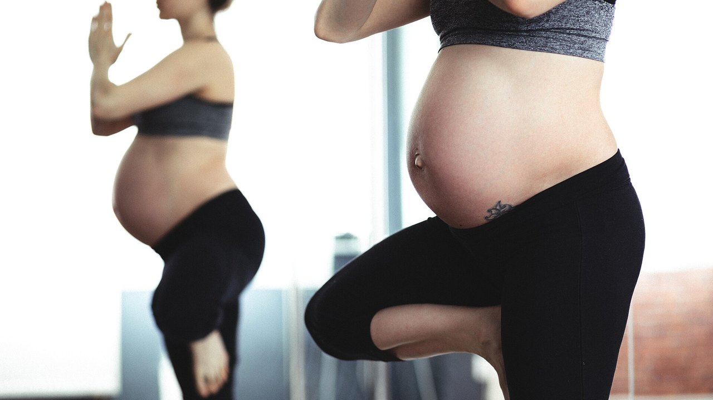

Pesi in gravidanza: cosa dicono davvero gli studi
Due post sono circolati nelle stesse settimane: uno elenca cinque motivi per continuare ad allenarsi con i pesi in gravidanza, l'altro mostra numeri molto precisi — 38% di diabete gestazionale in meno, 41% di preeclampsia in meno. Ho letto gli studi dietro entrambi. I numeri ci sono davvero, ed è una buona notizia. Ma uno è un'altra cosa rispetto a come viene letto, uno non si trova nella fonte citata, e tre dati che cambierebbero le decisioni di chi legge non compaiono in nessuno dei due.

In breve
- I numeri del post sono esatti, ma sono odds ratio: 38% di probabilità in meno di diabete gestazionale, non 38% di rischio in meno. La meta-analisi più recente, che lavora con i rischi, dice 26% (Li et al., 2026).
- 600 MET-minuti a settimana, cioè circa 140 minuti di attività moderata, è la soglia pubblicata per almeno il 25% di riduzione. Confermata alla lettera (Davenport et al., 2018).
- "Più ne fai, meglio è" non regge: la dose-risposta del 2026 trova un picco intorno a 500–550 MET-minuti e poi un plateau. Contano di più l'inizio precoce e la costanza.
- Sui pesi in particolare sappiamo meno di quanto sembri: nella revisione dedicata al lavoro di forza, il 90% degli studi mescolava forza e aerobico e quasi nessuno descriveva carichi e progressione (Prevett et al., 2025).
- Il dato che manca a entrambi i post: l'esercizio riduce l'aumento di peso eccessivo, ma aumenta le probabilità di un aumento insufficiente — ed è l'unico risultato di quella revisione giudicato di qualità alta (Ruchat et al., 2018).
Da dove nascono quei numeri
Il post di Margie Davenport, ricercatrice all'Università dell'Alberta, cita per esteso la fonte: una revisione sistematica del 2018 su 106 studi e 273.182 gravidanze. È raro e va detto. Ho controllato: i tre numeri delle slide corrispondono esattamente ai risultati pubblicati.
Negli interventi di solo esercizio — senza dieta o altri componenti aggiunti — le probabilità scendono così: diabete gestazionale 0,62 volte rispetto a chi non si allena, ipertensione gestazionale 0,61, preeclampsia 0,59. Tradotto in percentuali: 38%, 39%, 41%. È proprio quello che dicono le slide.
C'è un dettaglio che il post non evidenzia e che è il risultato più controintuitivo dello studio: quando all'esercizio si aggiungeva un intervento sulla dieta, la riduzione spariva. Non perché mangiare meglio faccia male, ma perché quei programmi erano diversi — di solito più brevi, meno supervisionati, con aderenza peggiore. È un promemoria utile su quanto conti come un programma viene seguito, non solo cosa contiene.
"38% in meno" di cosa, esattamente
Qui sta la precisazione più importante, e non riguarda l'onestà di chi ha fatto il post: riguarda il modo in cui il nostro cervello legge le percentuali.
Un odds ratio non è un rischio. Quando una complicanza è rara, i due numeri si somigliano; quando non lo è, l'odds ratio esagera. Il diabete gestazionale non è raro.
La meta-analisi più recente sul tema, pubblicata a settembre 2026 sullo stesso giornale, ha preso 19 studi randomizzati su esercizio supervisionato (6.213 donne) e ha calcolato i rischi relativi, non gli odds. Risultato: diabete gestazionale 26% in meno, non 38%. Nella stessa analisi, però, l'ipertensione gestazionale scende del 45%, più del 39% del post. Non è che il numero nuovo sia sempre più piccolo: è un numero diverso, misurato diversamente, su studi diversi.
Quanto esercizio serve davvero
Il numero verificabile è uno: 600 MET-minuti a settimana di attività moderata per ottenere almeno il 25% di riduzione. Gli esempi li fa lo studio stesso: circa 140 minuti di cammino svelto, acquagym, cyclette o lavoro di forza. La didascalia del post lo riporta parola per parola.
La slide successiva, però, scompone quel numero per singola complicanza: 60 minuti a settimana per la preeclampsia, 93 per l'ipertensione gestazionale, 106 per l'aumento di peso, 137 per il diabete gestazionale. Questi quattro valori non li ho trovati nella fonte citata né in fonti secondarie accessibili: l'unico dato pubblicato nell'abstract è il totale di 600 MET-minuti. Non significa che siano sbagliati — potrebbero venire da una figura dell'articolo completo — ma non sono verificabili, e una scaletta così precisa invita a fare il minimo indispensabile per un singolo esito.
Il lavoro del 2026 aggiunge la parte che manca: la curva dose-risposta si appiattisce intorno a 500–550 MET-minuti per l'aumento di peso. Oltre quella soglia, aggiungere volume non ha dato benefici ulteriori. E i fattori che hanno spostato davvero i risultati non erano i minuti, ma iniziare presto nella gravidanza (differenza significativa fra sottogruppi, p = 0,009), continuare per più di 20 settimane (p = 0,010), un'aderenza sopra l'80% e la combinazione di aerobico e forza — un punto che vale anche fuori dalla gravidanza, come ho raccontato parlando di forza, muscoli e cardio nello stesso programma.
E i pesi, da soli?
Il primo post si intitola "cinque motivi per cui le donne incinte dovrebbero sollevare pesi", e poi — con onestà — ammette in piccolo che 7 degli 9 studi citati combinavano forza e aerobico.
È un problema più grande di quanto sembri. La revisione dedicata al solo lavoro di forza in gravidanza, uscita nel 2025 su 50 studi e 47.619 partecipanti, trova risultati reali: meno ipertensione gestazionale (probabilità 0,42 volte), meno diabete gestazionale (0,62), meno disturbi dell'umore perinatali (0,48), meno macrosomia, cioè neonati di peso eccessivo (0,67). Ma gli autori chiudono con un avvertimento: il 90% degli studi erano programmi multicomponente, la dose di lavoro di forza era "da bassa a moderata" e la descrizione di carichi, progressione e criteri di scelta del peso era scarsa.
In altre parole: sappiamo che i programmi che contengono lavoro di forza funzionano. Non sappiamo ancora cosa faccia un allenamento di forza programmato bene — con un carico che progredisce, serie portate a un margine di ripetizioni sensato, settimane che si costruiscono una sull'altra. Quella ricerca non è ancora stata fatta, e gli autori lo scrivono come una chiamata alle armi.
La revisione del 2025 sulla qualità della vita, quella da cui il post prende i suoi cinque punti, ha lo stesso limite più uno: è una revisione senza meta-analisi, quindi non produce un effetto medio né intervalli di confidenza. Nove studi, 1.581 donne, direzione favorevole su peso, dolore lombare, umore, energia, forza e sonno. Il punto sul sonno viene da un solo studio.
I tre dati che nessuno dei due post riporta
1. La sicurezza, misurata
È la domanda numero uno di chi è incinta, e in nessuna delle dodici slide compare. Esiste una revisione dedicata: 46 studi, 266.778 donne. Nessun aumento delle probabilità di aborto spontaneo (0,88 volte) né di mortalità perinatale (0,86). Gli autori scrivono, in parole semplici, che l'esercizio appare "sicuro" rispetto a questi due esiti.
Con due avvertenze oneste che riporto perché contano: la qualità complessiva delle prove è giudicata molto bassa, e la maggior parte degli studi ha esaminato intensità moderata fino a 60 minuti per sessione. Oltre quella durata, scrivono, non possono dire nulla.
2. Il pavimento pelvico, e il momento in cui si comincia
Un'altra revisione dello stesso gruppo, su 24 studi e 15.982 donne, misura l'effetto dell'allenamento del pavimento pelvico in gravidanza: le probabilità di incontinenza urinaria scendono a 0,50 durante la gravidanza e a 0,63 dopo il parto.
Il dettaglio che cambia tutto: funziona nelle donne continenti prima di iniziare, non in chi ha già perdite. In chi aveva già sintomi, l'allenamento non si è comportato come una terapia. È un'informazione sul quando, non sul se — ed è esattamente il tipo di dato che una slide motivazionale lascia fuori.
3. Il peso ha due direzioni
Il primo post mette "meno aumento di peso eccessivo" al primo posto dei benefici, definendolo il risultato più consistente. È vero. Ma la revisione da cui viene quel risultato — 84 studi, 21.530 donne — riporta anche l'altra faccia: l'esercizio aumenta le probabilità di un aumento di peso insufficiente (1,32 volte). E questo è l'unico risultato di quella revisione a cui gli autori assegnano una qualità delle prove alta; il beneficio sull'aumento eccessivo è classificato da basso a moderato.
Gli autori stessi invitano alla prudenza, perché quel dato poggia su cinque studi randomizzati. Ma il punto resta: "l'esercizio aiuta a controllare il peso" in gravidanza non è un bene senza condizioni, ed è una ragione in più perché il peso lo segua chi ti segue la gravidanza.
Cosa dice davvero la ricerca
Negli interventi di solo esercizio le probabilità di diabete gestazionale, ipertensione gestazionale e preeclampsia scendono rispettivamente a 0,62, 0,61 e 0,59 rispetto a chi non si allena. I tre numeri delle slide sono corretti.
600 MET-minuti a settimana (circa 140 minuti di attività moderata) sono la soglia pubblicata per almeno il 25% di riduzione. Citata alla lettera.
Le linee guida attuali includono il lavoro di forza nelle gravidanze non complicate: la linea guida canadese 2019 giudica i benefici moderati e non identifica danni.
"38% in meno" sono odds, non rischio. Con i rischi relativi, sulla meta-analisi 2026 di esercizio supervisionato, il diabete gestazionale scende del 26% e l'ipertensione gestazionale del 45%.
La dose non è lineare: il beneficio sull'aumento di peso si appiattisce intorno a 500–550 MET-minuti. Iniziare presto e restare costanti pesa più dei minuti.
I benefici attribuiti ai "pesi" vengono quasi sempre da programmi misti, con dosi di forza basse e progressione non descritta. Il lavoro di forza fatto come si deve non è ancora stato studiato.
Che il controllo del peso sia un beneficio senza rovescio: l'esercizio aumenta anche le probabilità di un aumento di peso insufficiente (1,32 volte), e questa è la prova di qualità più alta della revisione.
I minuti per singola complicanza della slide 5 (60, 93, 106, 137 a settimana): non compaiono nell'abstract della fonte citata né in fonti secondarie accessibili.
Come applicarlo
Prima di tutto: questo è un articolo che spiega degli studi, non un programma. Esistono condizioni mediche in cui l'esercizio in gravidanza è controindicato, e solo chi ti segue la gravidanza può dirti se è il tuo caso. Quello che segue vale come cornice per quella conversazione, non al posto suo.
- Parti dalla domanda giusta. Come scrive Davenport in una delle slide, per anni la domanda è stata "è sicuro?". I dati su aborto spontaneo e mortalità perinatale non mostrano un aumento di rischio, quindi la domanda utile diventa un'altra: cosa serve a te, in questo trimestre, con questo livello di partenza.
- Guarda il totale settimanale, non la singola seduta. 600 MET-minuti è un bilancio di sette giorni, non un compito giornaliero. E oltre 500–550 il grafico si appiattisce: più volume non ha prodotto più beneficio.
- Metti insieme aerobico e forza. È la combinazione che nei sottogruppi del 2026 è andata meglio, e combacia con quello che sappiamo fuori dalla gravidanza.
- Tieni traccia dello sforzo, non solo del carico. In gravidanza il peso sul bilanciere dice poco: la stessa serie può costare molto di più di sei settimane fa. Registrare il margine di ripetizioni rimaste (RIR) è il modo più semplice per accorgersene in tempo — lo stesso principio che uso per scegliere serie e ripetizioni fuori dalla gravidanza.
- Il pavimento pelvico si allena prima, non dopo. Nei dati l'effetto c'è in chi non ha ancora sintomi. Come e quanto, lo stabilisce un professionista.
- Il peso lo segue chi ti segue. Salire troppo e salire troppo poco sono entrambi esiti da evitare, e nessuno dei due si valuta da soli con una bilancia.
Il carico cambia, il diario resta
In Nurvan registri carico, ripetizioni e RIR seduta per seduta: quando lo stesso peso inizia a costare di più, lo vedi nel grafico invece di accorgertene a metà serie. E con il modulo coach–atleta il tuo professionista vede gli stessi dati in tempo reale, senza screenshot su WhatsApp.
Domande frequenti
Posso continuare ad allenarmi con i pesi se lo facevo già prima della gravidanza?
Le linee guida attuali includono il lavoro di forza nelle gravidanze non complicate, e la revisione del 2018 non ha trovato un aumento di aborto spontaneo o mortalità perinatale. Ciò che cambia, negli studi come nella pratica, è come ci si allena: intensità, scelta degli esercizi e tolleranza si modificano con i trimestri. La decisione, però, passa da chi ti segue la gravidanza: solo lui o lei sa se ci sono controindicazioni nel tuo caso.
Quanto esercizio serve a settimana?
Il valore pubblicato è 600 MET-minuti a settimana di attività moderata, circa 140 minuti, per almeno il 25% di riduzione delle complicanze studiate. La meta-analisi 2026 mostra però che il beneficio si appiattisce intorno a 500–550 MET-minuti e che iniziare presto e mantenere un'aderenza alta contano più del volume.
Allenarsi in gravidanza fa male al bambino?
Sui due esiti più temuti — aborto spontaneo e mortalità perinatale — la revisione su 266.778 donne non trova un aumento delle probabilità. Gli autori precisano però che la qualità delle prove è molto bassa e che la maggior parte degli studi ha esaminato intensità moderata fino a 60 minuti per sessione: oltre quella durata, dicono, non si può concludere.
Posso iniziare da zero in gravidanza?
Gli studi inclusi in queste revisioni riguardavano donne senza controindicazioni all'esercizio, e molti programmi partivano proprio in gravidanza. I sottogruppi del 2026 suggeriscono che iniziare presto conta. Ma "partire da zero" è esattamente la situazione in cui serve il via libera di un medico o di un'ostetrica prima di cominciare, non dopo.
Leggi anche
- Forza, muscoli e cardio insieme: si può? — perché la combinazione funziona e quando si ostacolano a vicenda
- Quante ripetizioni per la massa: il mito dell'8-12 — come si scelgono serie, ripetizioni e recupero sui dati
- Split di allenamento: principiante vs avanzato — quante volte a settimana allenare un gruppo muscolare
Fonti
- Davenport MH, Ruchat SM, Poitras VJ, et al., 2018. Prenatal exercise for the prevention of gestational diabetes mellitus and hypertensive disorders of pregnancy: a systematic review and meta-analysis. Br J Sports Med 52(21):1367-1375. PMID 30337463 — doi.org/10.1136/bjsports-2018-099355
- Li L, He J, Wang C, et al., 2026. Effects of supervised exercise during pregnancy on gestational diabetes mellitus and other pregnancy outcomes: a systematic review and meta-analysis. Br J Sports Med 60(17):1350-1358. PMID 42457535 — doi.org/10.1136/bjsports-2026-111586
- Prevett C, Gingerich J, Sivak A, Davenport MH, 2025. Resistance training in pregnancy: systematic review and meta-analysis of pregnancy, delivery, fetal and pelvic floor outcomes and call to action. Br J Sports Med 59(16):1173-1182. PMID 40610191 — doi.org/10.1136/bjsports-2024-109123
- Redondo-Delgado P, Blanco-Giménez P, López-Ortiz S, et al., 2025. Effects of strength training on quality of life in pregnant women: a systematic review. Acta Obstet Gynecol Scand 104(7):1231-1243. PMID 40230063 — doi.org/10.1111/aogs.15122
- Ruchat SM, Mottola MF, Skow RJ, et al., 2018. Effectiveness of exercise interventions in the prevention of excessive gestational weight gain and postpartum weight retention: a systematic review and meta-analysis. Br J Sports Med 52(21):1347-1356. PMID 30337461 — doi.org/10.1136/bjsports-2018-099399
- Davenport MH, Kathol AJ, Mottola MF, et al., 2018. Prenatal exercise is not associated with fetal mortality: a systematic review and meta-analysis. Br J Sports Med 53(2):108-115. PMID 30337346 — doi.org/10.1136/bjsports-2018-099773
- Davenport MH, Nagpal TS, Mottola MF, et al., 2018. Prenatal exercise (including but not limited to pelvic floor muscle training) and urinary incontinence during and following pregnancy: a systematic review and meta-analysis. Br J Sports Med 52(21):1397-1404. PMID 30337466 — doi.org/10.1136/bjsports-2018-099780
- Mottola MF, Davenport MH, Ruchat SM, et al., 2018. 2019 Canadian guideline for physical activity throughout pregnancy. Br J Sports Med 52(21):1339-1346. PMID 30337460 — doi.org/10.1136/bjsports-2018-100056
Spunto: carosello di Built With Science (1 ottobre 2026) e carosello di Margie Davenport (24 settembre 2026). Nessun testo e nessuna immagine dei due post è stato riprodotto: le affermazioni sono state riscritte e verificate sulla letteratura primaria.
Giammaria Loi è il fondatore di Nurvan. Si allena con i pesi dal 2012, lavora come personal trainer e coach certificato FIPE dal 2013 e gareggia nel powerlifting a livello nazionale dal 2018. Ogni articolo che firma parte dagli studi scientifici e arriva a ciò che funziona davvero in palestra. Pagina autore
Nota: contenuto informativo, non sostituisce il parere di un medico, di un'ostetrica o di un altro professionista sanitario. In gravidanza esistono condizioni in cui l'esercizio è controindicato: parlane con chi ti segue prima di cambiare il tuo allenamento.